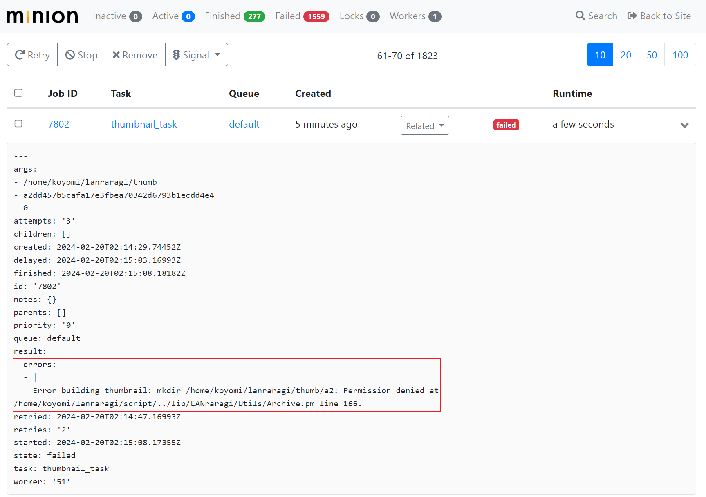
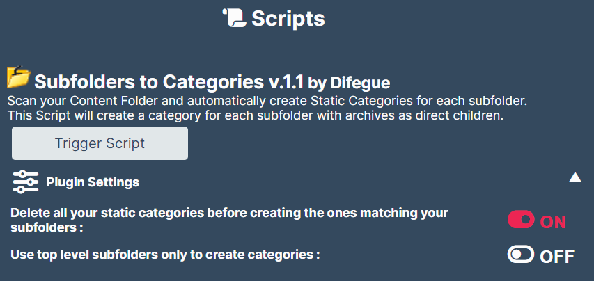

LANraragi 使用心得
序言
我使用 LANraragi 已经有一段时间了，期间发现了一些问题，都解决了，正好写一篇文章记录一下。读者可以参考我之前安装 LANraragi 的文章。
问题1：挂载缩略图目录导致缩略图无法生成
安装 LANraragi 时，为了保证 content 目录只读，我将缩略图目录设置成了容器内部路径。这意味着，每次删除再重启该容器，都需要重新生成缩略图 —— 这样做浪费计算资源，也不符合 Docker 最佳实践。那就使用一个新的 volume 存放缩略图。
1 | version: "3" |
lanraragi-thumbnail 就是存放缩略图的 volume。
启动容器，发现缩略图无法生成。进入『Minion Console』，发现如下错误：

为什么 mkdir 会没有权限呢？进入容器：
1 | /home/koyomi/lanraragi # ls -lah |
注意 thumb 目录，它是由 root 用户创建，但运行 LANraragi 的 koyomi 用户没有对该目录的写权限。授权即可：
1 | chmod 777 thumb |
然后在『Tags and Thumbnails』里点击『Generate Missing Thumbnails』。
也可以看到，
content目录作为默认的漫画目录，被作者人为的提高了权限，因此默认使用content/thumb作为缩略图目录并不会产生这个问题。
问题2：无法实时监控文件变动
见设置中的『Background Workers』：
This File Watcher is responsible for monitoring your content directory and automatically handling new archives as they come. If Shinobu is dead or unresponsive, you can reboot her by clicking this button.
本该实时监控文件变动，但我却用不了这个功能。原因在于该功能的底层使用了 inotify API：
The inotify API provides a mechanism for monitoring filesystem events. Inotify can be used to monitor individual files, or to monitor directories. When a directory is monitored, inotify will return events for the directory itself, and for files inside the directory.
如果文件系统不支持这个 API，那么 LANraragi 自然无法监控文件变动。
我使用 VMware 的共享文件夹将漫画资源映射到 Linux 中，而共享文件夹底层的文件系统不支持 inotify。
解决方法：点击『Restart File Watcher』，重启后会扫描整个 content 目录；或者写一个定时任务脚本，POST /api/shinobu/restart。
其实很多软件都是用 inotify 来监控文件变动，因此这是一个普遍的问题。
我的 Jellyfin 的媒体文件夹同样使用了 VMware 的共享文件夹，因此也有该问题。不过 Jellyfin 知名得多，我从相关帖子中很快发现了这个问题。更重要地是，Jellyfin 明确地写了只有支持 inotify 的文件系统才有这一功能，这一点值得其他软件作者写文档时借鉴。
Real Time Monitoring
This will let Jellyfin automatically update libraries when files are added or modified. Unfortunately, this feature is only supported on certain filesystems.
For Linux systems, this is performed by inotify. NFS and rclone do not support inotify, but support can be provided by using a union file system such as mergerfs with your networked file systems.
顺便提一下 Jellyfin 的解决方案：
- 提高计划任务『扫描媒体库』的频率 —— 这个任务并不吃资源，频繁运行也没事；
- 通过 API 执行刷新；
收获
这个脚本挺好用的：

我的漫画目录结构是：
1 | ├── 作者1 |
这个脚本可以将对应的漫画划分到某一个作者的 Category 中。尽管我没有给漫画打 tag，以作者作为 Category 却起到了相同效果，让我可以根据作者选择漫画。
参考
- inotify(7) — Linux manual page
- LANraragi doc: Shinobu API
- Jellyfin doc: Real Time Monitoring
- Jellyfin not picking up new files on docker mount
- 我的Jellyfin影视库 搭建、信息刮削小记
- Shared folders and inotify: Does it work with VMWare + Any way to run Vagrant + VMWare in trial period?
- How does the Scheduled Task for Scan Media Library work?